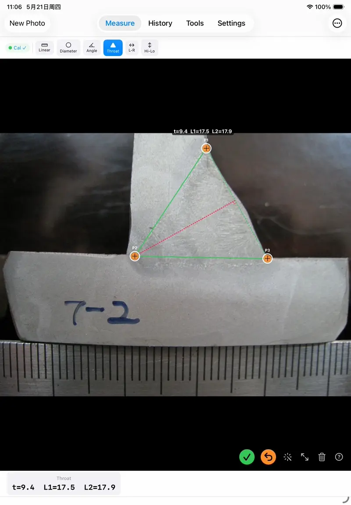

撮影。校正。測定。EN ISO 5817 で判定。
WeldGauge は iPhone を携帯型の溶接検査ステーションに変えます。既知の板厚や管径を校正の基準に使用 — 追加の道具は不要です。余盛、アンダーカット、段違い、のど厚などを測定し、EN ISO 5817 の品質レベル B・C・D で即座に判定します。


主な特長
現場での品質評価に必要なすべてを — 写真撮影から規格に基づく合否判定まで。
📷 カメラと写真読み込み
最大 20× ズームで溶接部を撮影し、細部まで確認できます。既存の画像を写真ライブラリから読み込み可能。背景の除去機能が溶接プロファイルを分離し、測定しやすくします。
📐 スマート校正
写真内の既知寸法を使って校正できます — 開先端に見える板厚、管の外径、または定規。アプリが正確なピクセル対 mm の比率を算出します。追加装置は不要です。
📏 EN ISO 5817 判定
不具合の種類（502、504、507、508、5011、5213、512）を選び、板厚を入力すると、品質レベル B・C・D の合否が即座にわかります。図解リファレンスガイドを内蔵。
📋 プロジェクト管理
溶接番号・場所・溶接者 ID ごとに検査をプロジェクトで整理。1 プロジェクトに複数の測定を登録可能。データはすべて端末内に保存 — 端末の外には何も出ません。
🛠 配管継手ライブラリ
標準配管継手（エルボ、T 形、レジューサ、キャップ）の検索可能なデータベースに、寸法と仕様を収録。現場ですばやく参照できます。
🔒 完全オフライン・プライベート
すべての機能がインターネットなしで動作します。データ収集ゼロ、アカウントなし、解析なし。通信環境のない遠隔地での現場検査に最適です。
動作の様子を見る
WeldGauge の中核機能を紹介する 4 つの実際の検査ワークフロー。
突合せ溶接 — 板厚による校正
開先端に見える既知の板厚で校正し、ブローホール（気孔）の不具合を測定します。
溶接長 — 円形穴による校正
直径既知の穴を校正基準に使い、溶接シームの長さを正確に測定します。
T 継手マクロ — EN 5817 判定
内蔵の EN ISO 5817 図解リファレンスガイドを使って、T 継手マクロ試験片を測定します。
ツール — 配管継手ライブラリ
検索可能な配管継手データベースを閲覧し、現場検査中の寸法参照に役立てます。
使い方
写真から合否判定までの 4 ステップ — デスクトップソフトは不要です。
1. 撮影
内蔵カメラで溶接部を撮影（最大 20× ズーム）するか、既存の写真を読み込みます。校正基準 — 板端、管面、または定規 — がフレーム内に写っていることを確認してください。
2. 校正
写真内の既知寸法に沿って線を引きます：開先端の板厚、管の外径、または定規。実寸値を入力すると、アプリがピクセル対 mm の比率を確定します。
3. 測定
タップして任意の溶接寸法を測定 — 余盛の高さ、アンダーカットの深さ、脚長、のど厚、段違い量。測定中も自由にパン・ズーム・回転できます。
4. 判定
不具合の種類を選び、板厚を入力します。アプリが測定値を EN ISO 5817 の限界値と比較し、達成した品質レベル — B・C・D または不適合 — を表示します。
実際の活用シーン
WeldGauge は溶接検査士が実際に働く環境のために設計されています。

配管突合せ溶接の検査
管継手の周囲溶接を撮影します。既知の管径や板厚を校正に使用。余盛の高さと段違いを測定し、EN ISO 5817 で判定します。

すみ肉溶接 — 板厚で校正
定規がなくても大丈夫。断面端に見える板厚が校正基準になります。写真の上で直接、のど厚と脚長を測定できます。

アンダーカットと欠陥の判定
アンダーカットの深さ、溶接金属の余盛、または任意の不具合を測定。アプリが EN ISO 5817 の 3 つの品質レベルすべてに対して即座に、明確な合否結果で判定します。

現場検査 — 複雑な配管アセンブリ
T 形、エルボ、レジューサ、フランジ接続の溶接を検査。完全オフラインで動作 — 通信環境のない遠隔配管サイトに最適です。

記録と報告
測定結果と注釈付き写真を検査記録用に書き出します。プロジェクトデータは溶接番号・場所・溶接者ごとに整理され、QA 文書にすぐ使えます。
よくある質問
インターネット接続は必要ですか？
いいえ。カメラ、校正、測定、EN ISO 5817 判定のすべての機能が完全オフラインで動作します。データの送信は一切ありません。
校正基準には何を使えますか？
写真に写っている既知寸法のものなら何でも：開先端の板厚、管の外径、定規、ブロックゲージ、硬貨など。アプリが参照に基づいてピクセル距離を実際のミリメートルに変換します。
対応している規格は？
WeldGauge は溶接不具合を EN ISO 5817 で評価し、品質レベル B（厳格）・C（中間）・D（緩和）をカバーします。7 種類の不具合に対応し、図解リファレンスガイド付きです。
測定精度はどのくらいですか？
精度は校正基準と画像品質に依存します。参照寸法がはっきり写っている鮮明な写真なら、ミリメートル未満の精度も達成できます。
データを収集しますか？
いいえ。データ収集ゼロ — 解析もトラッキングもアカウントもありません。写真と測定値はすべて端末内に残ります。プライバシーポリシー をご覧ください。
iPad で使えますか？
はい。WeldGauge は iPhone と iPad の両方に最適化されたユニバーサルアプリです。
誰のためのアプリですか？
溶接検査士（CWI、CSWIP、IWI）、品質管理エンジニア、製作現場の監督者、溶接を学ぶ学生 — 現場で素早く規格に基づく溶接評価が必要なすべての方です。
サポートへの連絡方法は？
wangning.engineer@outlook.com までメールしてください。返信は通常 24〜48 時間以内です。
アプリを入手
WeldGauge は iPhone・iPad 向けに App Store で配信中です。